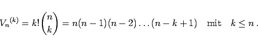
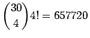
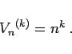

Inhalt Index DeskTop Bronstein

 Wahrscheinlichkeitsrechnung und Mathematische Statistik Kombinatorik
Wahrscheinlichkeitsrechnung und Mathematische Statistik Kombinatorik


|  | (16.6) |
| Beispiel |
|
Wieviel Möglichkeiten gibt es, in einer Wahlversammlung mit 30 Teilnehmern einen 4köpfigen Wahlvorstand, bestehend aus dem Vorsitzenden, seinem Stellvertreter und dem 1. und 2. Wahlhelfer zusammenzustellen? Die Antwort lautet . |
|  | (16.7) |
| Beispiel A |
|
Beim Fußball-Toto sind für 12 Spiele 312 verschiedene Tips möglich. |
| Beispiel B |
|
Mit der digitalen Einheit Byte, die aus 8 Bits besteht, können 28 = 256 verschiedene Zeichen dargestellt werden, was in der bekannten ASCII-Tabelle zum Ausdruck kommt. |